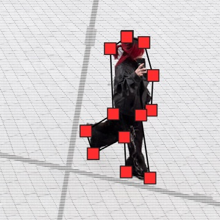

/
Projects
Also me ·

Visual designer & creative technologist · New York
I work across visual identity, publications, interactive experiences and music visuals. I take freelance projects for music releases and live shows. I judge each detail by how well it serves the idea.
I collaborate on visual perception research and experimental development at the NSSR Perception Lab (Jul 2026–present).
BFA in Communication Design, Parsons School of Design, 2026. Graduated with Honors.
Also me ·